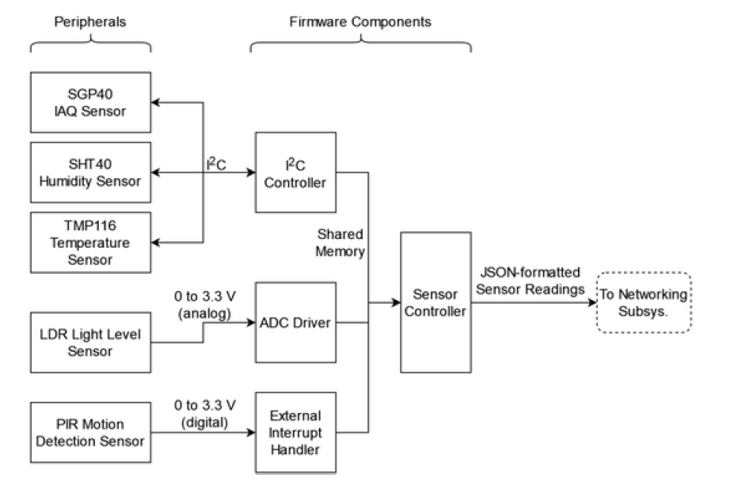

Peripherals
Daughterboard
The daughterboard is a custom printed circuit board designed by the team that provides sensor functionality to a microcontroller. The daughterboard is an expansion that plugs into the main board and must be correctly designed to properly make this mechanical connection. The daughterboard includes 4 sensors: an indoor air quality sensor (IAQ) that measures volatile organic compounds (VOCs), a humidity sensor, a light level sensor, and a motion detection sensor based on a passive infrared sensor (PIR). The VOC and humidity sensors have an I2C interface, the light level sensor has a simple on/off digital interface, and the light level sensor outputs an analog voltage that is sampled and interpreted. Because the VOC and humidity sensors are current-generation environmental sensors, they are contained in a compact, no-leads package. This makes it more complicated to assemble to the PCB, necessitating a reflow solder during the PCB assembly process. The team intends to order a board stencil to apply solder paste, populate components, then cook the board in a reflow oven to assemble the components.
Main board
The wireless connectivity subsystem is responsible for the wireless data transmission. This subsystem connects the host (microcontroller) to the cloud server (website) to enable data transmission using radio frequency. To establish the wireless connection, the microcontroller should be provided with a radio module (antenna) that could send and receive data using one of the data transmission protocols within the frequency range of the wireless protocol. One of the most common wireless protocols is IEEE 802.11, which is also known as Wi-Fi. Most of the 802.11 techniques use a short-range radius to transmit signals in the 2.4-GHz ISM (Information system management) frequency band. This subsystem interacts wirelessly with the webserver to transmit the data collected from the daughterboard on the host. The data is transferred on the network using the http application layer protocol. In the http protocol, the host in its role of client, sends a request to a Web server. The server then returns a response to that client. A client may take further action based on the server’s response, but http considers that action to be an entirely
|CC3220SF Datasheet: https://www.ti.com/lit/ds/symlink/cc3220s.pdf?ts=1647453671346&ref_url=https%253A%252F%252Fwww.ti.com%252Fproduct%252FCC3220S
PIR
The Passive Infrared Sensor also known as the PIR, provides the IoT with motion sensing capabilities. Here is information regarding the PIR’s operation:
LDR
The Light-Dependant Resistor or LDR for short, provides the IoT with light detecting capabilities. The LDR uses a driver that changes the analog input into a digital output that reflects the current resistances of the LDR. Here is information regarding the LDR:
VOC
The Volatile Organic Compound Sensor also referred to as the VOC provides the IOT with air quality sensing capabilities. This component is a breakout board that requires a driver to provide a sensible output. The VOC uses I2C to interface with the Launchpad and the humidity/temperature sensor to provide a quality reading. Here is information regarding the VOC:
Humidity/temperature
The Humidity/Temperature sensor provides the IoT with comfort level sensings. This component is similar to the VOC, it is a breakout board and also uses I2C to interface with the Launchpad. Using I2C to also interface this component to the VOC helps provide a quality response from the VOC. Here is information regarding the Humidity/Temperature Sensor:
Generic
This generic sensor is a STEMMA QT Connector. This would allow a consumer to add their own desired sensor onto the IoT. Here is informatioin regarding the STEMMA QT Connector: